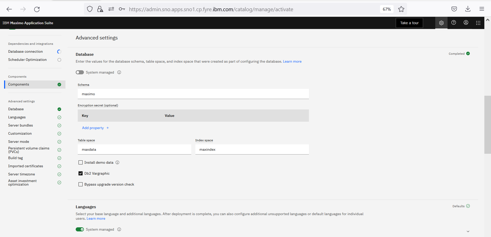

Single Node OpenShift (OpenShift 4.10+)
MAS 8.8/Manage 8.4 Technology Preview
This page documents how to setup MAS Manage on a SNO cluster.
Minimum Requirements
- vCPU: 16Cores
- RAM: 64Gb
AWS
This is based on a M5.4xlarge EC2 instance with mongo, db2u, db2w db, ibm sls, mas core, mas manage deployed.
- Download AWS CLI
- Use AWS login to your account
Create SNO cluster
- Download
openshift-installandpullsecret via this link - create install-config.yaml under folder called sno
- Remove the worker nodes part
- Use networkType: OpenShiftSDN. Do NOT use OVNKubernetes which has a conflict with IBM SLS install.
Here is a sample install-config.yaml
apiVersion: v1
baseDomain: <your base domain>
compute:
- name: worker
replicas: 0
controlPlane:
name: master
platform:
aws:
type: m5.4xlarge
replicas: 1
metadata:
name: sno
networking:
clusterNetwork:
- cidr: 10.128.0.0/14
hostPrefix: 23
machineNetwork:
- cidr: 10.0.0.0/16
networkType: OpenShiftSDN
serviceNetwork:
- 172.30.0.0/16
platform:
aws:
region: <your region>
publish: External
pullSecret: '<your secret>'
For example, region: us-east-2
- Create cluster
openshift-install create cluster --dir=sno
Note
To get the IBM Entitlement key and SLS License file check this link
Install MAS and dependencies
OC Login:
oc login --token=xxxx --server=<https://myocpserver>
Replace xxxx with your OpenShift token and https://myocpserver with your OpenShift Server.
You can get OC Login information from OpenShift Console (top right corner kube:admin drop down list, select Copy login command)
Run the core ansible collection:
1) Open Terminal/PowerShell
docker run -ti quay.io/ibmmas/ansible-devops bash
tar -zxf ibm-mas_devops.tar.gz
mkdir ~/masconfig
2) Copy the entitlement license file to masconfig folder:
- Open Terminal/PowerShell
- docker cp SRC_PATH CONTAINER:/DEST_PATH/.
- docker ps to get CONTAINER
- For example, docker cp c:/sno/entitlement.lic a68f4b2dcc21:/opt/app-root/src/.
- From the docker terminal/PowerShell, set the following environment variables:
export MONGODB_STORAGE_CLASS=<storage-class>
export IBM_ENTITLEMENT_KEY=<entitlement-key>
export MAS_APP_ID=manage
export SLS_ENTITLEMENT_KEY=<entitlement-key>
export SLS_STORAGE_CLASS=<storage-class>
export SLS_LICENSE_ID=<license-id>
export SLS_LICENSE_FILE=<license-file>
export UDS_STORAGE_CLASS=<storage-class>
export UDS_CONTACT_EMAIL=<your email-id>
export UDS_CONTACT_FIRSTNAME=<your first name>
export UDS_CONTACT_LASTNAME=<your first name>
export MAS_INSTANCE_ID=<instance-id>
export MAS_CONFIG_DIR=<config-dir>
export MAS_WORKSPACE_ID=<mas-workspace-id>
export MAS_ENTITLEMENT_KEY=<entitlement-key>
export PROMETHEUS_STORAGE_CLASS=<storage-class>
export PROMETHEUS_ALERTMGR_STORAGE_CLASS=<storage-class>
export GRAFANA_INSTANCE_STORAGE_CLASS=<storage-class>
export MONGODB_REPLICAS=1
Note
To get the IBM Entitlement key and SLS License file check this link
Sample environment variables:
export MONGODB_STORAGE_CLASS=gp2
export MAS_APP_ID=manage
export SLS_STORAGE_CLASS=gp2
export SLS_LICENSE_ID=0242ac110002
export SLS_LICENSE_FILE=~/masconfig/entitlement.lic
export UDS_STORAGE_CLASS=gp2
export UDS_CONTACT_EMAIL=abc@us.ibm.com
export UDS_CONTACT_FIRSTNAME=abc
export UDS_CONTACT_LASTNAME=abc
export MAS_INSTANCE_ID=sno
export MAS_CONFIG_DIR=~/masconfig
export MAS_WORKSPACE_ID=masdev
export MAS_INSTANCE_ID=sno
export PROMETHEUS_STORAGE_CLASS=gp2
export PROMETHEUS_ALERTMGR_STORAGE_CLASS=go2
export GRAFANA_INSTANCE_STORAGE_CLASS=gp2
export MONGODB_REPLICAS=1
3) Run the ansible playbook to install MAS core and dependencies.
ansible-playbook playbooks/oneclick_core.yml
- Addition Details: MAS Ansible Devops Documentation
Intall DB2 (optional)
Install DB2 using this link
Sample
export DB2_BACKUP_STORAGE_ACCESSMODE=READWRITEONCE
export DB2_META_STORAGE_ACCESSMODE=READWRITEONCE
export DB2_META_STORAGE_CLASS=gp2
export DB2_DATA_STORAGE_CLASS=gp2
export DB2_BACKUP_STORAGE_CLASS=gp2
export DB2_LOGS_STORAGE_CLASS=gp2
export DB2_TEMP_STORAGE_CLASS=gp2
Install Manage
- You can the run following automation playbook to install DB2 and Manage.
ansible-playbook playbooks/oneclick_add_manage.yml
-
If you have your own database that you would like to use, inatall Manage app and configure database using the follwing steps:
-
Go to MAS admin UI.
- From OpenShift Console, go to Routes. Select Admin dashboard. Click on Locations to go MAS admin dashboard.
-
Make sure you can connect to coreapi service route.
-
Get the superuser password from
mas-sno-coreproject secrets to login to MAS admin dashboard.

- Create an authorized admin user using
Userspage.

- Install Manage from Catalog page.

- Select
Application versionaction to deploy operator.

- Select subscription

- After deployment is completed, select
Update configurationby selecting the action from the top right corner of the page:

- Update database connection:

- Update database configuration. Select
Install Demo Dataif want to have maxdemo data.

- Apply changes by click on blue
Activatebutton on the top right.
-